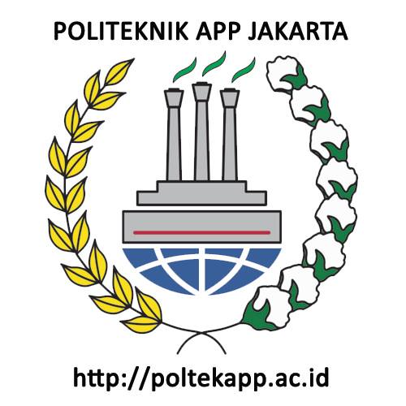

Melihat hubungan ekspor dan nilai tukar
Metode Penelitian Politeknik APP Jakarta
This just a showcase of what Quarto docs can produce. I use this part for my students.
1 Pendahuluan
1.1 Latar belakang
Latar belakang berisi tentang pentingnya topik yang diangkat dalam laporan. Uraikan alasan mengapa penulis tertarik menentukan topik yang dijadikan pembahasan, dapat menggunakan metode identifikasi masalah (fishbone diagram, root cause problem solving, dll). Kemukakan hal–hal yang mendorong atau argumentasi pentingnya penyelesaian permasalahan tersebut, termasuk jika ada hasil penelitian terkait yang telah dilakukan terdahulu.
1.2 Ruang lingkup
Bagian ini menguraikan batasan ruang lingkup bahasan permasalahan pada laporan, dapat berupa batasan waktu maupun topik yang dibahas. Biasanya pertanyaan dan batasan penelitian ada di sini.
1.3 Rumusan masalah
Bagian ini menuliskan poin-poin permasalahan apa saja yang akan dibahas dalam laporan. Dapat juga merumuskan hipotesis penelitian.
1.4 Tujuan dan manfaat penelitian
Bagian ini merupakan jawaban yang akan dicapai dari pembahasan laporan, biasanya dirumuskan dari poin-poin masalah yang telah dijabarkan sebelumnya. Identifikasi siapa saja stakeholders yang dapat memanfaatkan penelitian ini.
2 Studi pustaka
Salah satu bagian yang penting dalam penelitian adalah melakukan studi literatur, yaitu membaca dari berbagai sumber sesuai dengan topik yang diteliti untuk menghasilkan ide/analisis baru yang dipresentasikan dalam sebuah karya ilmiah.
Bab ini menguraikan dasar-dasar teori dan istilah yang berhubungan dengan permasalahan yang ditemui atau yang mendasari pemilihan topik laporan. Studi Pustaka dilengkapi dengan sumber referensi yang dipakai dan bukan berdasarkan asumsi penulis.
3 Metode penelitian
3.1 Data
| negara | ekspor |
|---|---|
| cina | 20.000USD |
| thailand | 21.000USD |
| vietnam | 10.000USD |
| Col1 | Col2 | Col3 |
|---|---|---|

3.2 Metode analisis
Metode yang dipilih adalah regresi univariat atau Ordinary Least Square (OLS) dengan 1 variabel independen. Penelitian ini merbaksud mencari hubungan antara hwy dan cty. Spesifikasi yang dilakukan adalah:
\[ y_{t}=\beta_0 + \beta_1 x_t+\mu_t \] di mana \(y_t\) adalah hwy dan \(x_t\) adalah cty.
4 Pembahasan
4.1 Pembahasan masalah
Pada bagian ini dapat ditampilkan data dan visualisasi data yang telah dikumpulkan.
4.2 Analisis masalah
Hasil regresinya adalah
5 Kesimpulan
Bagian ini berisi jawaban dari permasalahan dan tujuan yang diajukan pada laporan, yang diperoleh dari hasil pembahasan dan usulan perbaikan. Saran merupakan tindak lanjut dari kesimpulan, berupa anjuran atau rekomendasi yang disampaikan secara ringkas dan dapat diimplementasikan
6 Referensi
Gupta, K., Choirinnida, I. T., & Taufik, M. (2022). Global value chain impact for Indonesia economy and the way to make it more resilient. In Indonesia Post-Pandemic Outlook: Rethinking Health and Economics Post-COVID-19. BRIN Publishing.
Media, K. C. (2022, December 24). Ekspor Bauksit Distop, Pembangunan 12 Smelter Ditarget Rampung Juni 2023. KOMPAS.com. https://money.kompas.com/read/2022/12/24/110000926/ekspor-bauksit-distop-pembangunan-12-smelter-ditarget-rampung-juni-2023
Sjahrir, B. S., Kis-Katos, K., & Schulze, G. G. (2014). Administrative Overspending in Indonesian Districts: The Role of Local Politics. World Development, 59, 166–183. https://doi.org/10.1016/j.worlddev.2014.01.008
Referensi ini dibuat dengan Zotero. Di penelitian aslinya, anda harus masukan referensi yang anda gunakan ketika mulai menulis.